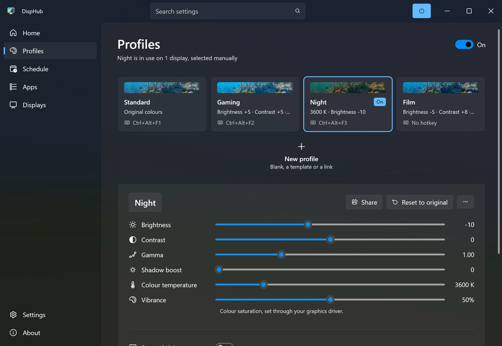
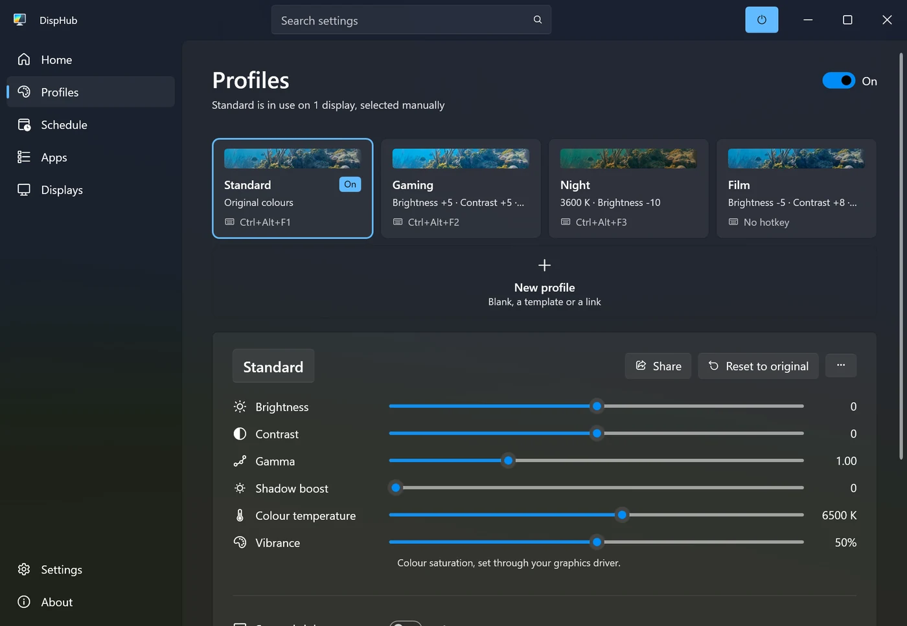
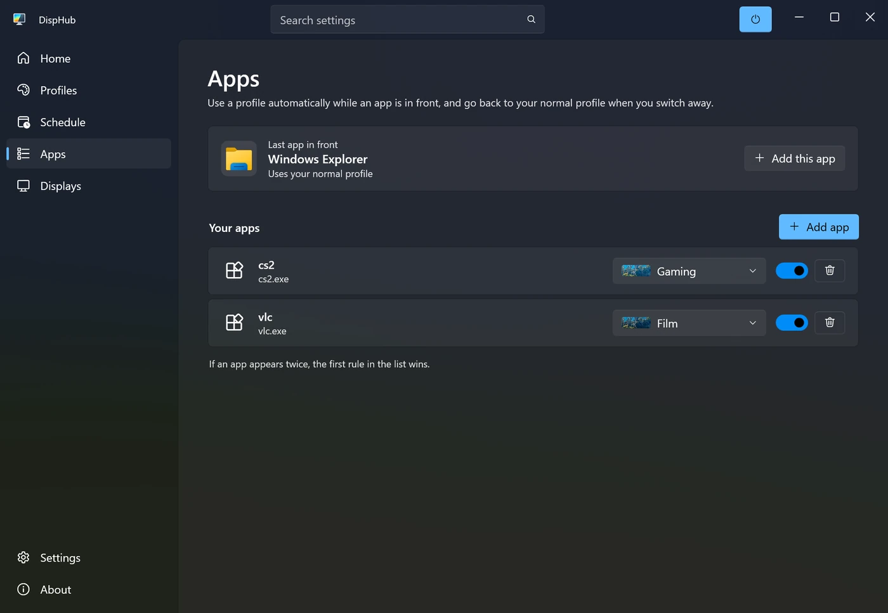

DispHub
Des profils de couleur pour votre écran.
Changez en un clic, par raccourci, par application ou selon un horaire.



Raccourcis
Changez instantanément.
Fonctionne avec tous les jeux et toutes les applications.

Applications
Chaque application a son propre rendu.
Votre profil tant que l'application est au premier plan, les couleurs normales quand vous en sortez.

Horaires
Programmez vos profils.
Changez au coucher et au lever du soleil, ou aux heures de votre choix.

Obtenir DispHub
Gratuit sur le Microsoft Store, avec une semaine de Pro à l'essai. Pro est une mise à niveau en un seul achat.